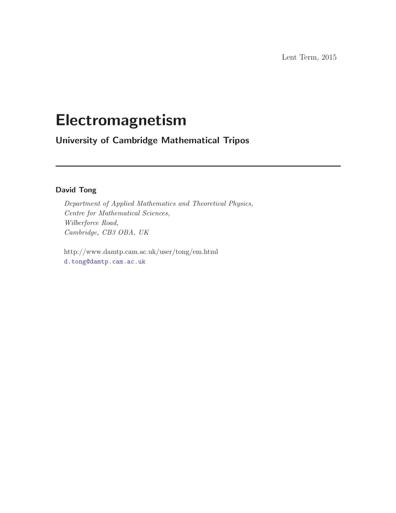

Electromagnetism
David Tong

1. Introduction
1.1 Charge and Current
1.1.1 The Conservation Law
1.2 Forces and Fields
1.2.1 The Maxwell Equations
2. Electrostatics
2.1 Gauss' Law
2.1.1 The Coulomb Force
2.1.2 A Uniform Sphere
2.1.3 Line Charges
2.1.4 Surface Charges and Discontinuities
2.2 The Electrostatic Potential
2.2.1 The Point Charge
2.2.2 The Dipole
2.2.3 General Charge Distributions
2.2.4 Field Lines
2.2.5 Electrostatic Equilibrium
2.3 Electrostatic Energy
2.3.1 The Energy of a Point Particle
2.3.2 The Force Between Electric Dipoles
2.4 Conductors
2.4.1 Capacitors
2.4.2 Boundary Value Problems
2.4.3 Method of Images
2.4.4 Many many more problems
2.4.5 A History of Electrostatics
3. Magnetostatics
3.1 Ampère's Law
3.1.1 A Long Straight Wire
3.1.2 Surface Currents and Discontinuities
3.2 The Vector Potential
3.2.1 Magnetic Monopoles
3.2.2 Gauge Transformations
3.2.3 Biot-Savart Law
3.2.4 A Mathematical Diversion: The Linking Number
3.3 Magnetic Dipoles
3.3.1 A Current Loop
3.3.2 General Current Distributions
3.4 Magnetic Forces
3.4.1 Force Between Currents
3.4.2 Force and Energy for a Dipole
3.4.3 So What is a Magnet?
3.5 Units of Electromagnetism
3.5.1 A History of Magnetostatics
4. Electrodynamics
4.1 Faraday's Law of Induction
4.1.1 Faraday's Law for Moving Wires
4.1.2 Inductance and Magnetostatic Energy
4.1.3 Resistance
4.1.4 Michael Faraday (1791-1867)
4.2 One Last Thing: The Displacement Current
4.2.1 Why Ampère's Law is Not Enough
4.3 And There Was Light
4.3.1 Solving the Wave Equation
4.3.2 Polarization
4.3.3 An Application: Reflection off a Conductor
4.3.4 James Clerk Maxwell (1831-1879)
4.4 Transport of Energy: The Poynting Vector
4.4.1 The Continuity Equation Revisited
5. Electromagnetism and Relativity
5.1 A Review of Special Relativity
5.1.1 Four-Vectors
5.1.2 Proper Time
5.1.3 Indices Up, Indices Down
5.1.4 Vectors, Covectors and Tensors
5.2 Conserved Currents
5.2.1 Magnetism and Relativity
5.3 Gauge Potentials and the Electromagnetic Tensor
5.3.1 Gauge Invariance and Relativity
5.3.2 The Electromagnetic Tensor
5.3.3 An Example: A Boosted Line Charge
5.3.4 Another Example: A Boosted Point Charge
5.3.5 Lorentz Scalars
5.4 Maxwell Equations
5.4.1 The Lorentz Force Law
5.4.2 Motion in Constant Fields
5.5 ...and Action
5.5.1 Non-Relativistic Particles
5.5.2 Relativistic Particles
5.5.3 The Maxwell Action
5.6 More on Energy and Momentum
5.6.1 Energy and Momentum Conservation
5.6.2 The Energy-Momentum Tensor
5.6.3 Angular Momentum
6. Electromagnetic Radiation
6.1 Retarded Potentials
6.1.1 Green's Function for the Helmholtz Equation
6.1.2 Green's Function for the Wave Equation
6.1.3 Checking Lorentz Gauge
6.2 Dipole Radiation
6.2.1 Electric Dipole Radiation
6.2.2 Power Radiated: Larmor Formula
6.2.3 An Application: Instability of Classical Matter
6.2.4 Magnetic Dipole and Electric Quadrupole Radiation
6.2.5 An Application: Pulsars
6.3 Scattering
6.3.1 Thomson Scattering
6.3.2 Rayleigh Scattering
6.4 Radiation From a Single Particle
6.4.1 Liénard-Wierchert Potentials
6.4.2 A Simple Example: A Particle Moving with Constant Velocity
6.4.3 Computing the Electric and Magnetic Fields
6.4.4 A Covariant Formalism for Radiation
6.4.5 Bremsstrahlung, Cyclotron and Synchrotron Radiation
7. Electromagnetism in Matter
7.1 Electric Fields in Matter
7.1.1 Polarization
7.1.2 Electric Displacement
7.2 Magnetic Fields in Matter
7.2.1 Bound Currents
7.2.2 Ampère's Law Revisited
7.3 Macroscopic Maxwell Equations
7.3.1 A First Look at Waves in Matter
7.4 Reflection and Refraction
7.4.1 Fresnel Equations
7.4.2 Total Internal Reflection
7.5 Dispersion
7.5.1 Atomic Polarizability Revisited
7.5.2 Electromagnetic Waves Revisited
7.5.3 A Model for Dispersion
7.5.4 Causality and the Kramers-Kronig Relation
7.6 Conductors Revisited
7.6.1 The Drude Model
7.6.2 Electromagnetic Waves in Conductors
7.6.3 Plasma Oscillations
7.6.4 Dispersion Relations in Quantum Mechanics
7.7 Charge Screening
7.7.1 Classical Screening: The Debye-Hückel model
7.7.2 The Dielectric Function
7.7.3 Thomas-Fermi Theory
7.7.4 Lindhard Theory
7.7.5 Friedel Oscillations
Back to Home